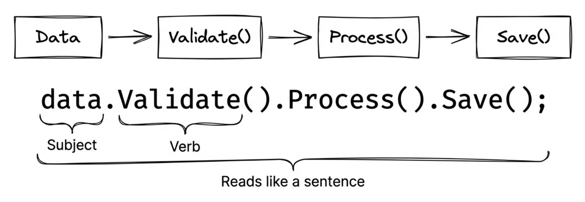
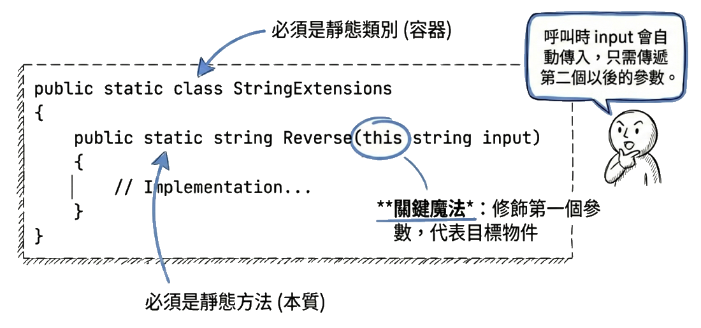
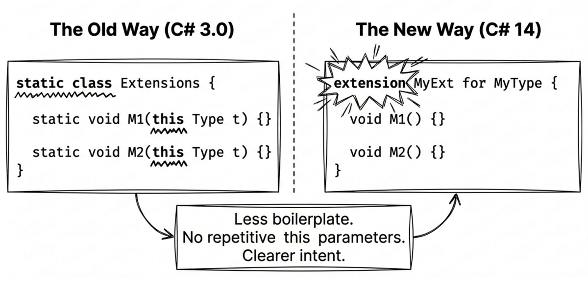
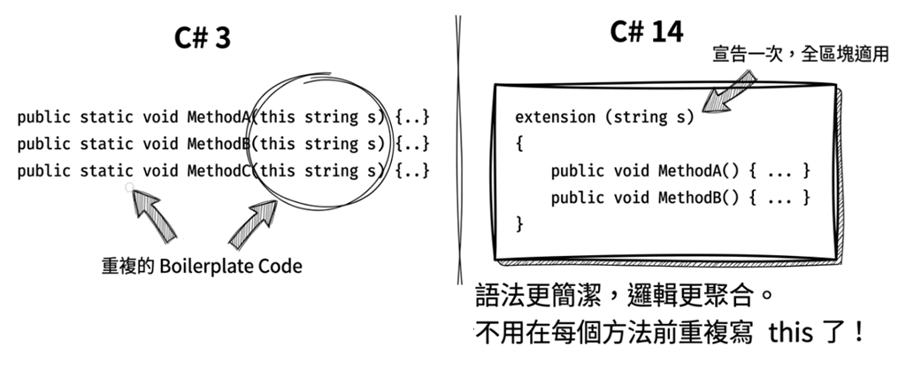
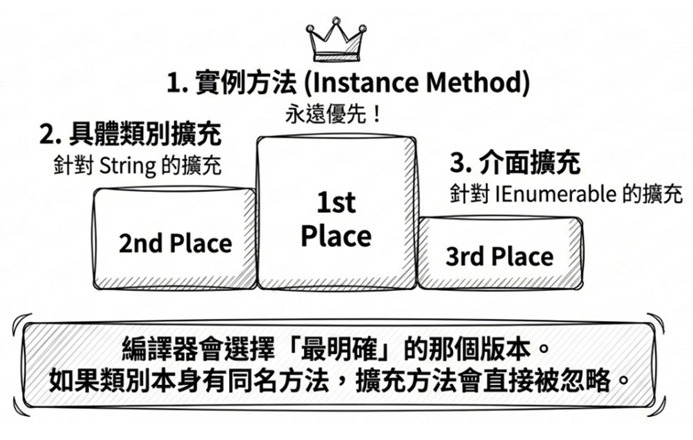

第 11 章：擴充方法
在軟體開發的過程中，我們經常會想要「借用」現有的類別，然後替它補上一些實用功能。傳統的做法不外乎繼承（inheritance），或者另外寫一個靜態工具類別（static helper class）。但這兩種方式各有彆扭之處：繼承容易讓類別階層變得複雜，而靜態工具類別的呼叫方式又不夠直觀，例如你得寫 Helper.Do(obj)，而不是直接對物件呼叫 obj.Do()。
C# 3.0 推出的擴充方法（extension methods）就是為了解決這個問題。它讓你能夠在不修改原始類別（甚至是你沒有原始碼的類別）的情況下，為其新增方法，而且呼叫起來就跟原生的實例方法（instance method）一模一樣。到了 C# 14，語法又進一步加入了擴充成員（extension members），讓你不僅能擴充方法，連屬性、運算子都能擴充。
本章會先從擴充方法要解決的實務問題出發，再進入語法、運作原理、最佳實務、C# 14 的新語法，以及方法衝突的解決方式。最後再透過幾個實戰範例，看看擴充方法在真實專案中的應用。
11.1 為什麼需要擴充方法？
在看擴充方法的語法之前，先回到它要解決的問題：沒有擴充方法時，這類需求通常怎麼處理？傳統做法又卡在哪裡？
傳統靜態工具類別的痛點
如果你常寫 .NET 應用程式，大概多少都會建立一些自己常用的工具類別，方便重複使用。以字串處理為例，我們可能會寫一個 StringHelper 類別，裡面提供一些常用的字串操作，例如字串反轉、把第一個英文字母轉成大寫等等。這個輔助工具類別通常會宣告成 static（即無法建立該類別的執行個體），例如：
public static class StringHelper
{
public static string Reverse(string s)
{
if (string.IsNullOrEmpty(s)) return s;
char[] charArray = s.ToCharArray();
Array.Reverse(charArray);
return new string(charArray);
}
public static string Capitalize(string s)
{
if (string.IsNullOrEmpty(s))
return s;
return char.ToUpper(s[0]) + s[1..];
}
}如果我們想要結合這兩個功能——也就是把一個字串反轉之後，再將第一個英文字母轉成大寫——程式碼可能會這樣寫：
問題在哪裡？
- 可讀性差：巢狀呼叫導致執行順序與閱讀順序相反
- 不直觀：看起來不像是對字串本身進行操作
- 難以串接：無法流暢地連續呼叫多個操作
擴充方法的優勢
如果把這兩個方法改成擴充方法，剛才的程式碼可以這麼寫：
優勢：
- ✓ 閱讀順序自然：從左到右，符合思維習慣
- ✓ 物件導向風格：看起來就像是
String類別原本就有提供這些方法 - ✓ 流暢介面（Fluent API）：支援方法鏈（method chaining）

原始碼： DemoWhyExtension
11.2 擴充方法的語法
擴充方法的語法並不複雜，關鍵就在於 this 關鍵字。理解這個核心概念後，你很快就能寫出自己的擴充方法。
基本語法：this 關鍵字
要將靜態方法改成擴充方法，只需要在第一個參數前加上 this 關鍵字：
public static class StringHelper
{
public static string Reverse(this string s)
{
if (string.IsNullOrEmpty(s)) return s;
char[] charArray = s.ToCharArray();
Array.Reverse(charArray);
return new string(charArray);
}
public static string Capitalize(this string s)
{
if (string.IsNullOrEmpty(s)) return s;
return char.ToUpper(s[0]) + s[1..];
}
}語法要點：
- 必須是靜態類別：擴充方法只能定義在靜態類別中
- 必須是靜態方法：方法本身也必須是
static this修飾第一個參數：編譯器將此型別視為該方法所欲擴充的類別- 第一個參數代表目標物件：呼叫時會自動傳入
也就是說，this string s 不是多一個呼叫端要傳入的參數，而是在告訴編譯器：「這個方法要掛到 string 上。」

如何決定擴充的目標類別？
編譯器會將關鍵字 this 所修飾的型別視為該方法所欲擴充的類別。例如：
這代表 ToString 會成為 DateTime 類別的擴充方法，而參數列中的 this DateTime aDate 即代表當前的物件。
呼叫時：
擴充介面
擴充方法不僅能擴充具體類別，也能擴充介面。LINQ 的核心機制就是透過擴充 IEnumerable<T> 介面實現的：
使用時，所有實作 IEnumerable<T> 的型別都能使用這個擴充方法：
注意上面範例的第一行："Seattle" 是字串，而 string 實作了 IEnumerable<char> 介面，所以可以呼叫 First() 擴充方法，回傳第一個字元 ‘S’。同理，int[] 和 List<T> 都實作了 IEnumerable<T>，所以也能使用這個擴充方法。
其運作原理很簡單：編譯器在解析擴充方法時，會檢查接收者是否可指派給 this 參數的型別。只要答案是「可以」，該方法就會被視為候選方法。因此，當 this 參數是 IEnumerable<T> 時，任何實作這個介面的型別都能使用它，不需要在各個具體型別上分別再定義一次。
這也是 LINQ 的核心運作原理——透過擴充 IEnumerable<T> 介面，LINQ 的方法（如 Where、Select、OrderBy）便能套用到陣列、集合、字串等各種型別上。這裡靠的是編譯器根據 this 參數型別進行靜態方法解析，而不是執行時期的動態綁定。
參數傳遞規則
擴充方法雖然宣告為 static，但呼叫方式與一般的物件方法（instance method）沒有兩樣。由於編譯器會把當前的物件傳遞給擴充方法的第一個參數（即以 this 修飾的參數），所以呼叫擴充方法時，實際傳入的參數會比宣告時的參數少一個。
Note
this只能用於第一個參數。如果你將this加在第二個或之後的參數，程式將無法通過編譯。
11.3 擴充方法的最佳實務
擴充方法雖然強大，但如果使用不當，可能會造成程式碼維護上的困擾，甚至讓同事或未來的自己感到困惑。這一節整理幾個實務上常見的原則。
1. 不要污染核心命名空間
✗ 不建議：
✓ 建議：
原因：
- 將擴充方法放在
System或其他根命名空間下，會讓所有使用該命名空間的程式碼都看到這些擴充方法。 - 污染 IntelliSense，增加認知負擔。
- 可能與其他程式庫的擴充方法產生衝突。
2. 優先擴充介面而非具體類別
針對具體類別（不是最佳做法）：
✓ 優先擴充介面：
優勢：
- 適用範圍更廣（
List<int>、int[]、HashSet<int>都能用） - 符合「針對介面寫程式，而非針對實作」的原則
3. 使用泛型擴充提升重用性
當擴充邏輯不依賴特定元素型別時，可以用泛型把適用範圍放大。以下範例讓任何 IEnumerable<T> 都能判斷是否為 null 或空序列：
4. 注意 null 安全
擴充方法可以在 null 物件上呼叫（因為實際是靜態方法），所以必須處理 null 情況：
public static class StringExtensions
{
public static bool IsNullOrWhiteSpace(this string? value)
{
return string.IsNullOrWhiteSpace(value);
}
public static string Truncate(this string? value, int maxLength)
{
if (value == null) return string.Empty;
return value.Length <= maxLength
? value : value.Substring(0, maxLength);
}
}
// 可以安全地在 null 上呼叫
string? text = null;
bool isEmpty = text.IsNullOrWhiteSpace(); // true5. 效能考量
使用擴充方法的程式碼不會增加執行時期的特殊派發成本，因為它在編譯時期就已經被編譯器轉換掉了。如果用反組譯工具查看編譯出來的 IL 代碼，你會看到，呼叫擴充方法的程式碼本質上仍會編譯成靜態方法呼叫。
以下程式片段只是為了說明編譯器的轉換規則：
更一般的轉換模式：
這意味著：
- 沒有額外的特殊派發機制：擴充方法在編譯後仍然是普通的靜態方法呼叫，不會因為「擴充」這個語法糖而多出額外的執行時期查找成本。
- 可用一般靜態方法的角度理解效能：JIT 編譯器會像處理其他靜態方法一樣評估是否最佳化，但是否內嵌（inlining）仍取決於方法本身和執行環境。
- 真正的效能關鍵仍在方法實作：擴充方法是否夠快，主要還是看你的演算法、配置記憶體的方式，以及是否重複列舉資料。
原始碼： DemoExtensionSyntax
11.4 擴充成員 (C# 14)
前面介紹的 this 參數語法已經能處理多數需求，但它有個限制：只能定義擴充「方法」，無法擴充屬性或運算子。C# 14 引入了全新的 extension 區塊語法，擴展了擴充方法的能力。現在不只可以定義擴充方法，還可以定義：
- 擴充屬性（extension properties）
- 擴充靜態方法（extension static methods）
- 擴充靜態屬性（extension static properties）
- 擴充運算子（extension operators）
extension 區塊

C# 14 使用 extension 關鍵字來定義擴充成員區塊。以下範例示範如何替 string 型別新增擴充成員：
public static class StringExtensions
{
// 擴充成員區塊（實例成員）
extension(string s)
{
// 擴充屬性（避免與 string.IsNullOrEmpty 方法名稱衝突）
public bool IsEmpty => string.IsNullOrEmpty(s);
// 擴充方法
public string Reverse()
{
if (string.IsNullOrEmpty(s)) return s;
var chars = s.ToCharArray();
Array.Reverse(chars);
return new string(chars);
}
}
}這種寫法的好處是，不用像傳統擴充方法那樣替每個擴充成員都加上 this 參數；只要在區塊宣告時指定一次：extension(string s)。

使用端的寫法仍然像一般成員呼叫：
第 2 行的 IsEmpty 是擴充屬性，呼叫時不需要括號，就像存取一般屬性一樣。而 Reverse() 是擴充方法，需要括號。這是 C# 14 新語法的優勢：以前用傳統語法無法定義擴充屬性，只能寫成 text.IsEmpty()；現在可以更自然地用 text.IsEmpty 屬性語法。
原始碼： DemoExtensionBlock
extension 區塊也可以搭配泛型與 where 約束。若要替可能含有 null 的序列加入過濾方法，可以這樣寫：
這裡有兩個關鍵：
where TSource : class表示TSource本身是非 nullable 的參考型別。- 接收者型別寫成
IEnumerable<TSource?>，表示輸入序列的元素允許是 null。
呼叫時可以這樣寫：
這裡的變數 names 型別會被推斷為 string?[]，而 validNames 的型別則是 IEnumerable<string>。也就是說，這個方法不只在執行時過濾掉 null，也會把回傳序列的元素型別收斂成 non-nullable 參考型別。若你把接收者寫成 IEnumerable<TSource> 並搭配 where TSource : class?，雖然仍可在執行時過濾 null，但回傳型別通常還是 nullable，較容易誤導讀者。
擴充靜態成員
前面介紹的 extension 區塊都有參數名稱（如 string s），這樣定義的是實例成員。如果只指定型別而不指定參數名稱，則定義的是靜態擴充成員。以下以 IEnumerable<TSource> 為例：
public static class EnumerableExtensions
{
// 擴充靜態成員（注意：沒有參數名稱）
extension<TSource>(IEnumerable<TSource>)
{
// 靜態擴充方法
public static IEnumerable<TSource> Combine(
IEnumerable<TSource> first,
IEnumerable<TSource> second)
=> first.Concat(second);
// 靜態擴充屬性
public static IEnumerable<TSource> Empty
=> Enumerable.Empty<TSource>();
// 擴充運算子 +
public static IEnumerable<TSource> operator +(
IEnumerable<TSource> left,
IEnumerable<TSource> right)
=> left.Concat(right);
}
}語法重點：
extension<TSource>(IEnumerable<TSource>)沒有參數名稱，表示區塊內的成員都是靜態的。- 成員必須加上
static關鍵字。 - 運算子也可以擴充。此範例是加法運算子：
public static ... operator +(...)。
呼叫方式如下：
這讓你可以為介面新增靜態方法。雖然 C# 11+ 已支援靜態抽象與靜態虛擬介面成員，但那需要修改介面定義；而擴充語法則可以在不修改原始型別的情況下達成類似效果。
原始碼： DemoExtensionStatic
下表整理了傳統擴充方法跟擴充成員的重點差異：
| 特性 | 傳統擴充方法（C# 3.0） | 擴充成員（C# 14） |
|---|---|---|
| 擴充方法 | ✓ | ✓ |
| 擴充屬性 | ✗ | ✓ |
| 擴充靜態方法 | ✗ | ✓ |
| 擴充運算子 | ✗ | ✓ |
| 語法 | this 參數 |
extension 區塊 |
實用範例：為 DateTime 新增擴充屬性
看過語法後，再用 DateTime 做一個比較完整的例子。以下擴充成員提供週末判斷、月份邊界，以及可排序字串格式：
public static class DateTimeExtensions
{
extension(DateTime dt)
{
// 擴充屬性：判斷是否為週末
public bool IsWeekend =>
dt.DayOfWeek is DayOfWeek.Saturday or DayOfWeek.Sunday;
// 擴充屬性：取得該月的第一天
public DateTime FirstDayOfMonth =>
new DateTime(dt.Year, dt.Month, 1);
// 擴充屬性：取得該月的最後一天（必須透過 dt 呼叫其他擴充屬性）
public DateTime LastDayOfMonth =>
dt.FirstDayOfMonth.AddMonths(1).AddDays(-1);
// 擴充方法：格式化為可排序的日期時間字串
public string ToSortableDateTimeString() => dt.ToString("s");
}
}
// 用法示範
var today = DateTime.Today;
if (today.IsWeekend)
{
Console.WriteLine("今天是週末！");
}
Console.WriteLine($"本月第一天：{today.FirstDayOfMonth:yyyy-MM-dd}");這裡刻意將方法命名為 ToSortableDateTimeString()，因為 s 標準格式會輸出像 2026-03-25T08:30:00 這樣的可排序字串。它的外觀符合 ISO 8601 常見格式，但不會保留時區或 DateTime.Kind 資訊。如果你的需求是序列化後可 round-trip 還原，通常應優先考慮 "O"（round-trip）格式。
原始碼： DemoExtensionMembers
Note
C# 14 的
extension語法是對傳統擴充方法的補充，而非取代。傳統的this參數語法仍然有效，你可以根據需求選擇適合的方式。建議在需要擴充屬性或運算子時使用新語法。
11.5 優先順序與衝突解決
當你開始廣泛使用擴充方法後，遲早會遇到一個問題：如果擴充方法與現有的實例方法（instance method）「撞名」了，編譯器會選擇哪一個？又或者，兩個不同的第三方套件都剛好替 string 擴充了同名的方法，這時候該怎麼辦？
這一節會先說明 C# 編譯器如何選擇候選方法，再看衝突發生時可以怎麼處理。

實例方法優先於擴充方法
重要規則：任何相容的實例方法永遠優先於擴充方法，即使擴充方法的參數型別更具體。
這樣設計是為了維持既有型別的行為一致性。否則，一旦某個程式庫或第三方套件新增了同名擴充方法，就可能意外改變原本呼叫實例方法的結果，形成難以察覺的破壞性變更。換句話說，擴充方法的角色比較像是「後補的便利語法」，而不是覆蓋既有 API 的機制。
以下範例可以看出這個規則：
在此情況下，唯一能呼叫擴充方法的方式是透過靜態語法：
Extensions.Foo(test, 123); // 輸出：「擴充方法」擴充方法之間的衝突
如果兩個擴充方法有完全相同的簽章（signature），使用時必須透過靜態語法明確指定要呼叫哪一個。但如果兩個擴充方法的名稱相同，而目標型別是「相容的」，則編譯器會優先選擇比較具體的方法。這通常代表更精確的型別匹配，也比較符合型別安全與可預測性的原則。
單看文字描述不太容易掌握，請搭配以下範例來理解：
public static class StringHelper
{
public static bool IsCapitalized(this string s)
{
return !string.IsNullOrEmpty(s) && char.IsUpper(s[0]);
}
}
public static class ObjectHelper
{
public static bool IsCapitalized(this object s)
{
return s?.ToString() is string str
&& str.Length > 0
&& char.IsUpper(str[0]);
}
}
// 用法示範
bool test1 = "Perth".IsCapitalized(); // 呼叫 StringHelper 的版本StringHelper 和 ObjectHelper 都有定義 IsCapitalized 擴充方法，但它們擴充的對象不一樣：一個是 string，一個是 object。由於 object 型別比較泛化，string 是更具體的型別，所以編譯器在替最後一行程式碼決定該使用哪個方法時，會選擇 StringHelper 的版本。你可以把它理解成「在多個可行候選中，優先挑選最貼近接收者真實型別的那一個」，這樣呼叫結果通常更直觀。
以下整理編譯器在碰到相同名稱的擴充方法時的選擇優先順序：
- 實例方法 > 擴充方法
- 具體型別（class/struct）> 介面（interface）
- 較具體的型別 > 較泛化的型別
命名空間的重要性
擴充方法必須在範圍內才能使用，通常需要匯入定義該擴充方法的命名空間：
namespace MyCompany.Extensions
{
public static class StringHelper
{
public static bool IsCapitalized(this string s)
{
if (string.IsNullOrEmpty(s)) return false;
return char.IsUpper(s[0]);
}
}
}
// 在其他檔案中使用
namespace MyApp
{
using MyCompany.Extensions; // 必須匯入命名空間！
class Program
{
static void Main()
{
Console.WriteLine("Perth".IsCapitalized()); // 現在可以用了
}
}
}如果沒有 using MyCompany.Extensions;，程式將無法編譯。這是刻意的設計：編譯器只會考慮目前範圍內可見的擴充方法，如此可避免所有擴充方法一股腦暴露到全域範圍，減少 IntelliSense 污染與名稱衝突。這也是為什麼將擴充方法放在專屬命名空間是最佳實務——使用者可以依需求選擇是否匯入。
降級擴充方法（demoting）
當 Microsoft 在新版 .NET 中加入的擴充方法與你自己定義的擴充方法名稱衝突時，你可以透過手動「降級」來處理這個問題，而不破壞現有程式碼的二進位相容性。
解決方法：移除 this 關鍵字，將擴充方法降級為普通靜態方法。例如：
這種手動降級的作法有下列優點：
- 已編譯的組件（assembly）仍然可以正常運作（因為擴充方法在編譯時就轉換成靜態方法呼叫）。
- 重新編譯時，程式碼會自動綁定到 Microsoft 的新版本。
- 如果使用者仍想使用你的版本，則必須改用靜態方法的呼叫方式：
MyExtensions.Capitalize(str)。
這種技巧在維護開源程式庫時特別有用。
11.6 區域函式（local functions）
區域函式跟擴充方法不是同一件事。不過它們都屬於方法層級的進階用法，而且在撰寫擴充方法時，確實可能順手用區域函式來整理內部邏輯，所以這裡一併介紹。
簡單來說，區域函式（local function）就是「寫在方法裡面的方法」。先看一個基本範例：
其中的 Add 就是區域函式。這個範例也帶出一個基本規則：區域函式只能在其外層方法中呼叫，超出此範圍即不可用。以上面的範例來說，Add 方法就只能在 Demo 方法中使用。
區域函式也可以直接存取外層方法的區域變數：
在這個例子中，區域函式 Multiply 可以直接使用外層方法中的區域變數 multiplier。
與擴充方法的差異
| 特性 | 擴充方法 | 區域函式 |
|---|---|---|
| 定義位置 | 靜態類別中 | 方法內部 |
| 可見範圍 | 整個命名空間（需 using） |
僅限外層方法 |
| 必須是 static | 是 | 否（可選擇加上 static） |
| 存取外層變數 | 否 | 是（若宣告 static 則否） |
| 用途 | 擴充現有型別 | 組織方法內的輔助邏輯 |
適用場景
區域函式適合用於：
- 避免重複程式碼：方法內有重複的邏輯，但又不值得提升為類別層級的方法
- 遞迴輔助函式：需要遞迴，但只在當前方法中使用
- 迭代器實作：提升可讀性
以下範例示範如何用區域函式拆分參數驗證與實際迭代邏輯：
public IEnumerable<int> GetEvenNumbers(int start, int end)
{
ValidateRange(start, end);
return GetEvenNumbersCore(start, end);
void ValidateRange(int s, int e)
{
if (s > e)
throw new ArgumentException("start 不可大於 end");
}
IEnumerable<int> GetEvenNumbersCore(int s, int e)
{
for (int i = s; i <= e; i++)
{
if (i % 2 == 0)
yield return i;
}
}
}上面的範例使用了兩個區域函式：ValidateRange 和 GetEvenNumbersCore。這是一個常見的模式：
ValidateRange負責參數驗證，如果驗證失敗會立刻拋出例外。因為它只在這個方法內使用，沒必要提升為類別層級的方法。GetEvenNumbersCore是真正執行迭代的方法。這裡之所以拆成兩個方法，是因為當方法使用yield return時，程式碼會被編譯為「延遲執行」的迭代器，意味著參數驗證也會被延遲到第一次枚舉時才執行。把驗證邏輯拆出來，可以確保參數錯誤在呼叫時立即被發現。
這個模式在寫 LINQ 擴充方法時特別常見。
原始碼： DemoLocalMethods
11.7 實戰範例
本節透過幾個應用場景來展示擴充方法如何提升程式碼的表達力與可維護性。
Fluent API 設計
擴充方法是實作 Fluent API 的關鍵技術。以下範例定義了兩個常見的小工具：Tap 用來插入副作用，Map 用來轉換物件：
public static class FluentExtensions
{
public static T Tap<T>(this T obj, Action<T> action)
{
action(obj);
return obj;
}
public static TResult Map<TSource, TResult>(
this TSource obj, Func<TSource, TResult> selector)
{
return selector(obj);
}
}
// 用法示範
var userDto = new User("Alice", 30)
.Tap(u => Console.WriteLine($"建立使用者：{u.Name}"))
.Map(u => new UserDto(u.Name, u.Age >= 18))
.Tap(dto => Console.WriteLine($"轉換完成：{dto.DisplayName}"));這個範例中的兩個擴充方法各自負責不同工作：
Tap：執行一個副作用（如印出 log），然後回傳原物件繼續鏈接。名稱來自 Ruby，意思是「輕輕點一下」。Map：將物件轉換為另一個型別，類似 LINQ 的Select，但作用於單一物件而非集合。
這種寫法的好處是程式碼從上到下呈現完整流程：建立使用者 → log → 轉換為 DTO → log。如果用傳統寫法，通常會需要多個中間變數和多行程式碼。
原始碼： DemoFluentAPI
擴充 LINQ
LINQ 本身就是透過擴充方法實作的。當現有操作不足以描述你的需求時，也可以自己加入新的 LINQ 操作：
public static class LinqExtensions
{
public static IEnumerable<T> WhereNotNull<T>(
this IEnumerable<T?> source) where T : class
{
return source.Where(x => x != null)!;
}
public static IEnumerable<IEnumerable<T>> Batch<T>(
this IEnumerable<T> source, int batchSize)
{
if (batchSize <= 0)
throw new ArgumentException(
"批次大小必須大於 0", nameof(batchSize));
var batch = new List<T>(batchSize);
foreach (var item in source)
{
batch.Add(item);
if (batch.Count == batchSize)
{
yield return batch;
batch = new List<T>(batchSize);
}
}
if (batch.Count > 0)
yield return batch;
}
public static IEnumerable<T> TakeEvery<T>(
this IEnumerable<T> source, int step)
{
if (step <= 0)
throw new ArgumentException("間隔必須大於 0", nameof(step));
int index = 0;
foreach (var item in source)
{
if (index % step == 0)
yield return item;
index++;
}
}
}呼叫時可以這樣寫：
原始碼： DemoLinqExtensions
Note: .NET 6+ 已內建 Chunk，概念上與此處的 Batch 類似。如果你的需求只是把序列切成固定大小的區塊，通常可優先考慮直接使用 System.Linq.Enumerable.Chunk。不過兩者回傳型別並不完全相同：此處的 Batch 每一批回傳的是 List<T>，而 Chunk 回傳的是 T[]；在大多數情境下可直接替換，但若你仰賴子集合的具體型別或可變性，仍需留意差異。
讓既有型別支援 foreach (duck typing)
C# 的 foreach 迴圈其實是依賴 duck typing（鴨子型別）運作的：只要一個型別有名為 GetEnumerator 的方法，且回傳型別符合列舉器規範（有 Current 和 MoveNext），它就可以被 foreach 迭代，不需要實作 IEnumerable 介面。
利用這個規則，我們可以透過擴充方法，讓原本沒有實作 IEnumerable 的型別也能被 foreach 使用。例如，讓 int 支援 foreach 來執行迴圈 N 次：
這種寫法帶有一點技巧性，適合用在明確且小範圍的情境；若用得太廣，反而可能讓讀者不容易預期型別行為。
範例程式： DemoForeachDuckTyping
智慧參數驗證 (CallerArgumentExpression)
在寫驗證用的擴充方法時，配合 C# 10 引入的 [CallerArgumentExpression]，可以讓呼叫端的程式碼更簡潔，同時保留完整的錯誤訊息資訊。例如：
用法示範：
如果沒有這個 attribute，呼叫時通常得寫 age.ThrowIfNegative(nameof(age))；現在編譯器會自動幫你填入 "age"（即呼叫端的變數名稱或運算式字串）。這也是 .NET 6+ 許多標準 API（如 ArgumentNullException.ThrowIfNull）背後的實作原理。
AI 協作：重構為擴充方法
你可以請 AI 幫你把一組靜態工具方法轉換成流暢的擴充方法鏈。
Prompt
請將此靜態輔助類別重構為 C# 擴充方法，以支援流暢 API 風格（例如
str.Reverse().Capitalize()）。要求：
- 使用 C# 12+ 語法
- 加入 null 安全檢查
- 包含 XML 文件註解
- 遵循命名空間最佳實務
本章重點回顧
- 擴充方法讓你能夠在不修改原始類別的情況下為其新增方法，同時保持物件導向的呼叫風格。
- 語法要點：靜態類別、靜態方法、
this修飾第一個參數。 - C# 14 擴充成員：新的
extension區塊語法，支援擴充屬性、擴充靜態方法、擴充運算子。 - 最佳實務：避免命名空間污染、優先擴充介面、使用泛型、注意 null 安全。
- 區域函式適合組織方法內的輔助邏輯，可存取外層變數。
- 實戰應用：Fluent API 設計、擴充 LINQ、與 AI 協作重構。
擴充方法是現代 C# 常用特性之一，LINQ、Fluent API、測試框架都大量使用。理解擴充方法，能讓你的程式碼更簡潔、更具表達力。
本章術語
| 英文 | 中文 | 說明 |
|---|---|---|
| Binary compatibility | 二進位相容性 | 程式庫更新後，舊版編譯的程式仍能正常運作 |
| Demoting | 降級 | 移除 this 關鍵字，將擴充方法轉為普通靜態方法 |
| Extension method | 擴充方法 | 在不修改原始類別的情況下為其新增方法 |
| Extension operator | 擴充運算子 | C# 14 新增，為型別新增擴充運算子 |
| Extension property | 擴充屬性 | C# 14 新增，為型別新增擴充屬性 |
| Fluent API | 流暢介面 | 使用方法鏈設計的 API，提升程式碼可讀性 |
| Instance method | 實例方法 | 必須透過物件實例呼叫的方法 |
| IntelliSense | 智能提示 | IDE 提供的程式碼自動完成功能 |
| Local function | 區域函式 | 定義在方法內部的輔助函式 |
| Method chaining | 方法鏈 | 連續呼叫多個方法的技巧，常用於 Fluent API |
| Method signature | 方法簽章 | 方法的名稱、參數型別和數量的組合 |
| Static class | 靜態類別 | 只包含靜態成員的類別，無法實例化 |